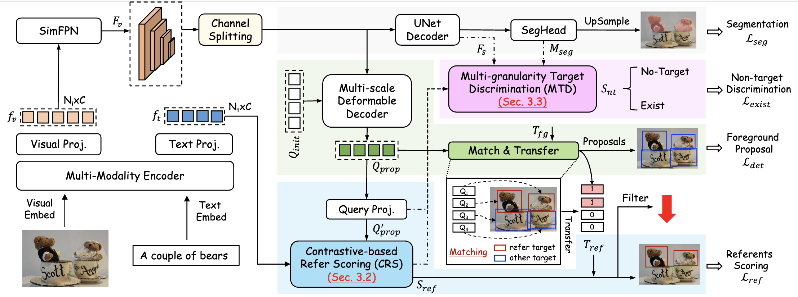
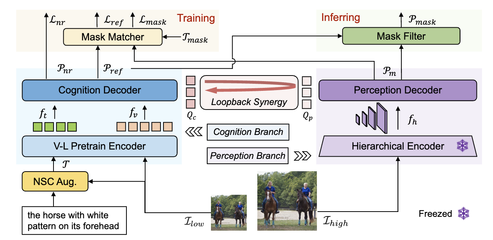
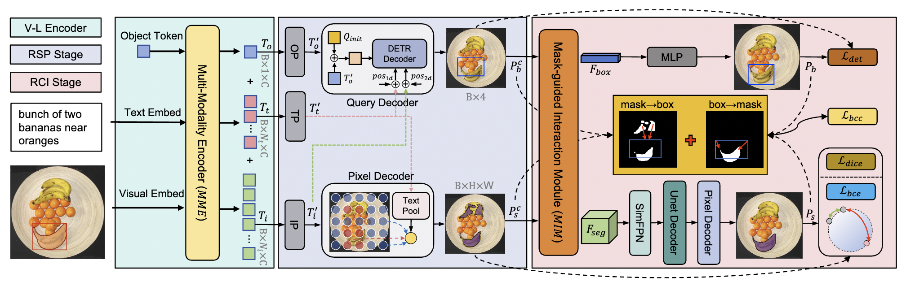
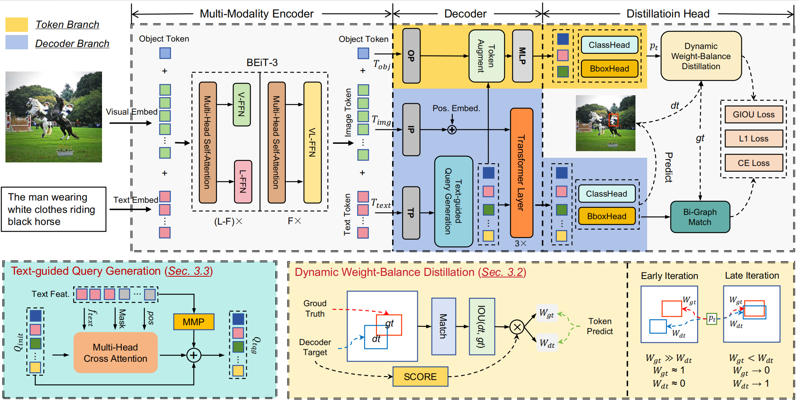
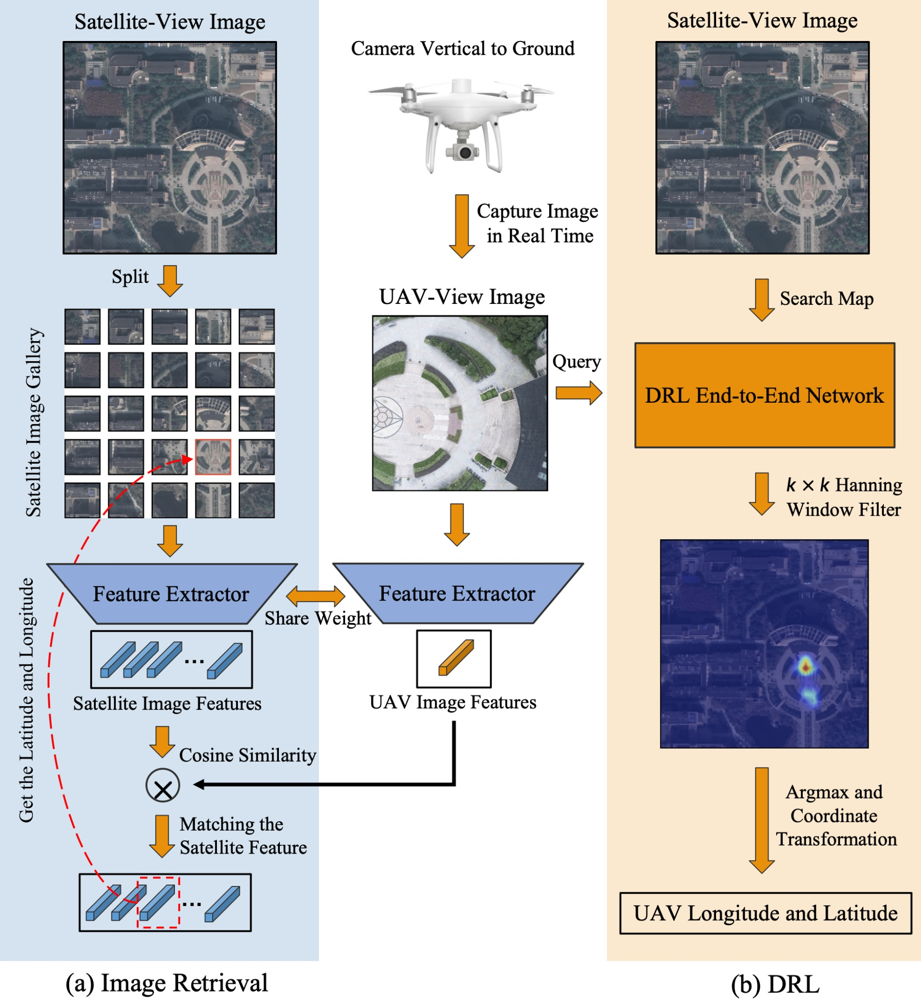
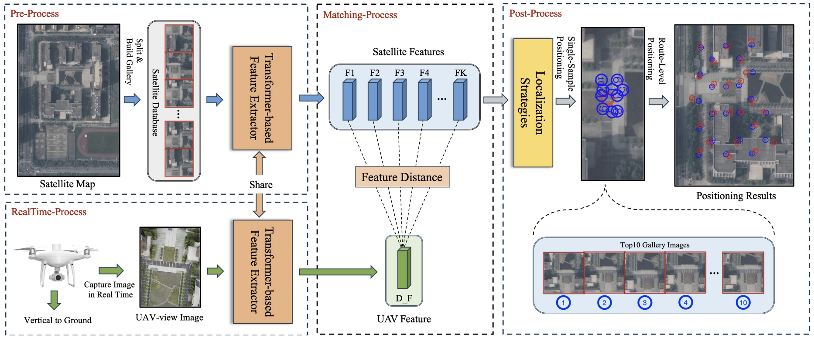

Bio
I am a second-year PhD stduent at the SEUOneCoLab in SouthEast University advised by Prof. Wankou Yang. Currently, my research focuses on visual grounding and multi-modal large language model.
Publications
† corresponding author






Vision-Based UAV Self-Positioning in Low-Altitude Urban Environments
IEEE Transactions on Images Process 2023